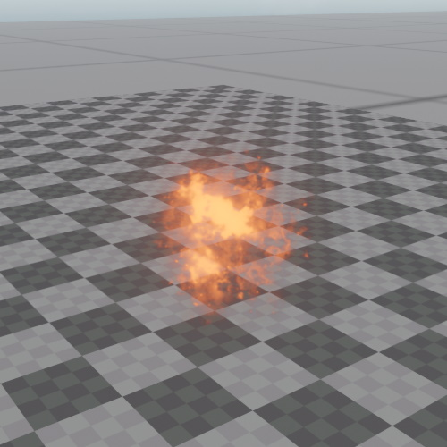

Sprite Component
The sprite component is used to render a textured quad that always faces the camera and whose on-screen size never exceeds a defined limit. Sprites are mainly used to place 3D icons or markers in the world. For example all the shape icons in the editor are sprites. However, they can also be used for simple effects, for instance to represent small projectiles.

Although sprites have a world space size, their on-screen size is clamped to a maximum value. That means they won't fill up the screen when the camera comes very close.
Component Properties
-
Texture: The texture to use. -
BlendMode: How to blend the sprite with the background. -
Color: A tint color to multiply into the texture. -
Size: The actual size of the sprite in the world. Based on this, the screen space size is computed. This mostly affects how large the sprite appears from far away. -
MaxScreenSize: The maximum size of the sprite on screen. When the camera is close to the sprite, it will not fill up the entire screen. Instead, its on-screen size is clamped to this. Therefore, when getting close to a sprite, it appears to shrink. -
AspectRatio: The ratio of width to height of the sprite texture.